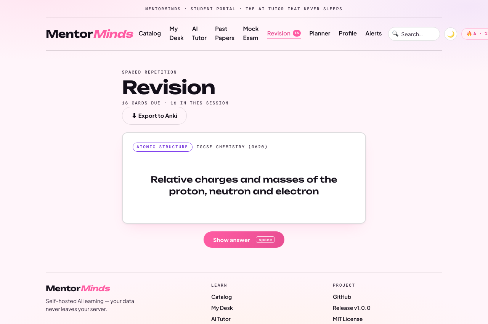

MentorMinds
RUBRIC · IHL/OPEN1
Criterion 1 · 20 marks
Innovation,
Novelty & Originality
Excellent · 90–100%
🧠
Self-hosted, fine-tuned tutor — not a GPT wrapperA LoRA fine-tune of Qwen2.5-0.5B on aligned Cambridge papers. Most edtech resells a vendor API; we own the model.
📚
Mark-scheme-grounded answersRetrieval returns the official Cambridge mark scheme, attributed — not a hallucinated guess.
📷
Snap & Solve VLMmoondream2 reads photographed diagrams/handwriting; clean text MCQs become auto-marked questions.
🎯
Adaptive learning loopWeak-topic detection, spaced-repetition revision, and a dropout-risk model close the loop.

AI tutor · grounded in official mark schemes
Verify live: AI Tutor tab → ask a past-paper question → attributed mark scheme01 / Innovation
MentorMinds
RUBRIC · IHL/OPEN3
Criterion 3 · 20 marks
Impact, Contribution
& Social Value
Excellent · SDG-aligned
🎓
SDG 4 — Quality EducationMark-scheme-grade tutoring for IGCSE/Cambridge students who can't afford private tutors.
💸
$0 per-question costA 0.5B model on cheap CPU means schools in emerging markets can run it sustainably.
🔒
Data sovereigntySchools self-host; student data never leaves their server — a real privacy guarantee.
📉
Dropout-risk early warningAn ML model surfaces at-risk students so instructors can intervene before they quit.

Instructor studio · dropout-risk early-warning queue
Measurable: per-topic accuracy, weekly plans, spaced-repetition retention03 / Impact
MentorMinds
RUBRIC · IHL/OPEN4
Criterion 4 · 20 marks
Presentation,
Communication & Visual
Excellent · clickable demo
🎨
Cohesive EduNova design systemOne bold, accessible visual language across all three portals.
🖱️
Judges can click the real thingNot slideware — a live, seeded demo with login. QR + credentials on the next slide.
📱
Responsive + Android buildCapacitor wrapper ships the student portal as a native app.

Student desk

Revision

AI study planner

Instructor studio
9 product screenshots + a recorded demo GIF in docs/screenshots/04 / Presentation
MentorMinds
VERIFY IT YOURSELFDon't take our word for it ↘
Check every claim, live.
🌐
mentorminds.duckdns.orgStudent portal · login student@mentormind.dev / 12345678
🧑🏫
/studio & /consoleInstructor studio & admin ops console on the same domain.
🧠
ml-service APIarnob666666-mentormind-ml.hf.space — tutor, vision, grading endpoints.
💻
Source + CIgithub.com/Arnobrizwan/mentormind — green builds, tests, this deck.

Scan → live demo
Django · DRF · FastAPI · Angular · Postgres · Redis · Celery · OpenCV · moondream2MentorMinds · DIGITEX 2026